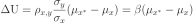
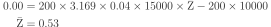

HR效用
| 文章类别: | 人力资源 |
|---|---|
| 创建时间: | 2013年4月 |
人力资源效用（HR utility）是用于分析组织的 HRM 活动给组织带来的综合收益。HR 效用存在两种不同的定义方式：
- Schmidt 和 Hunter (1998) 认为 HR 效用是指 HR 的边际效用，因此不考虑 HR 成本；
- Boudreau (1996) 认为 HR 效用是指 HR 的边际利润，因此要减去成本。
后一种观点更为流行，但要减去什么成本却没有定论。
BCG模型
HR 效用借助效用分析（utility analysis）估计 HRM 活动的价值。目前大部分效用分析都采用 Brogden-Cronbach-Gleser (BCG) 模型来估计特定 HRM 活动对组织的有用程度。
基本BCG模型
基本 BCG 模型如下：
其中：
- = 应用选拔工具带来的效度增量
- = 录取人数
- = 录取求职者的平均任期
- = 预测指标—校标相关系数
- = 单位绩效标准差的货币价值
- = 选拔程序成本
BCG模型原型
假定一个员工的货币价值（y）和预测指标（x）之间的回归呈线性，Brogden（1949）认为基于自变量的选拔过程比随机选拔过程更有效。有效程度表示为效用均值：

其中：
- 指选定或受限总体的预测指标值；
- 指非受限申请者总体的预测指标值；
 是相应预测指标的均值和标准差；
是相应预测指标的均值和标准差；- 通常指 x 和工作绩效的已知测量值之间的相关系数；
和 在 HR 效用领域通常记作 和 。
Brogden 假定 的分布的均值为 0，标准差为 1。因此公式简化为：
这样就得出了基本 BCG 模型的原型。
BCG模型应用
Whyte 和 Latham (1997) 应用 BCG 模型分析一个选拔程序：
组织雇用了 1410 个申请者中的 470 个，每个新雇员在公司的平均工作年限为 18 年，平均 Z 分数等于 1.09，选择的效度为 0.40， 值为 $16280，甄选程序的总成本为 $429110。则：
Cascio 等 (1988) 用 BCG 模型确定录取线（cutoff score）：
测验的最低录取线必须能保证组织完全收回招募每位新员工的投资。也就是说收益减成本必须等于零效用或零净现值，即 ΔU=0。比如组织招募了 200人，新员工的平均工作年限位 4 年，按 10% 的贴现率折算，则 T=3.169，效度参数为 0.40，货币衡量的工作绩效的标准差（）为 $15000，招募一个员工的成本为 $10000，雇佣的预测指标平均值则是未知值。

因为 ，λ 是正态分布曲线在所选择点上的纵轴值，SR 是选拔率。该例中 SR 取 0.30，即选拔率应为 30%。